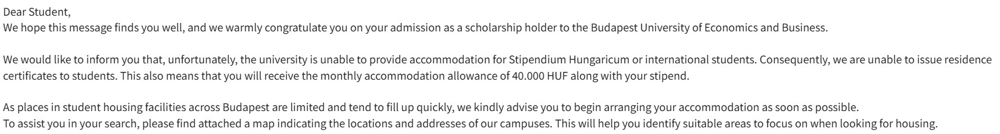

大学に寮がない！？ブダペストで家探しに苦労した話
みなさんこんにちは。
ハンガリー留学ラボのカネコです。
ハンガリー留学を考えている方に、今日はぜひ知っておいてほしいことがあります。
それは、「大学に合格しても、学生寮に住めるとは限らない」ということです。
私は、ハンガリー政府奨学金（スティペンディウム・ハンガリカム）でブダペスト商科大学（BUEB）へ進学しました。
当時は、「奨学生だから学生寮に入れる」と信じて疑いませんでした。
しかし、その考えは見事に覆されます。
合格してから知った現実
実際にBUEBから届いたメール

「スティペンディウム・ハンガリカム生および留学生向けの宿泊施設は提供できません」と案内されています。
大学への進学を決め、入学を受諾した数週間後（2025年7月頃）
大学から1通のメールが届きました。
メールには、「大学ではスティペンディウム・ハンガリカム生および留学生向けの宿泊施設は提供できません」とはっきり書かれていました。
「え……寮ないの？ それならもっと早く言ってよ」
思わず声が出ました。
正直、この時が一番焦ったかもしれません。
ホームページを見ても分からない
後から分かったことですが、このような情報は大学のホームページをどれだけ調べても、ほとんど出てきません。
どの大学も、「学生寮があります」とは書いてあります。
でも、本当に知りたいのはそこではありません。
知りたいのは、
- 奨学生でも入れるのか
- 新入生でも入れるのか
- 全員入れるのか
- 成績順なのか
こういった情報です。
しかし、その条件まで書いている大学はほとんどありません。
実際、私が合格していた別の大学では、新入生でも学生寮に入ることができました。しかも物凄くリーズナブルな値段です。
今思えば、生活費などを考えると、その大学へ進学していた方が経済的にはかなり楽だったと思います。
だからこそ、その大学に実際に通っている学生に話を聞けることは、本当に大きな価値があると感じました。
部屋が決まらないまま渡航
もちろん、「じゃあ日本にいるうちに部屋を探せばいいじゃないか」と思いますよね。
私もそう思い、Facebookで部屋探しを始めました。
しかし、現実は甘くありませんでした。
大家へメッセージを送っても返信が来ない。
やっと返事が来ても、「もう決まりました」。
そればかり。
「このまま住む場所が見つからなかったらどうしよう。」
そんな不安を抱えたまま、日本を出発しました。
最初のホステルは大失敗
ビザ申請の関係もあり、とりあえずBooking.comで一番安いホステルを予約しました。
「数日だけだから安ければいい。」
そう考えていました。
しかし、これが大失敗。
建物の一階はナイトクラブ。
夜になると重低音が鳴り始めます。
歌声。
笑い声。
叫び声。
朝4時過ぎまで爆音です。
翌日は大学の手続き、銀行口座の開設、在留許可証の申請。
やることは山ほどあるのに眠れません。
しかも、それが毎日。
日本の「星2のホテル」と海外の「星2のホテル」は全く別物だということを身をもって知りました。
逆に、日本の宿泊施設のレベルがどれほど高いのかを思い知りました。
結局、このホステルは数日で諦め、Airbnbで別のホステルへ移ることにしました。
約1か月、ホステル暮らし
日本にいる間には部屋は決まりませんでした。
結局、約1か月間ホステル生活。
その間も毎日部屋探しです。
Facebookでは、「まだ部屋が決まりません」という日本人留学生の投稿も何度も見ました。
どうやら苦労しているのは私だけではなかったようです。
当然、その間の宿泊費はすべて自己負担。
本来であれば、多くのスティペンディウム・ハンガリカム生は学生寮に入り、寮費は無料です。
私はその恩恵を受けられず、約1か月分の宿泊費を支払うことになりました。
これは本当に痛い出費でした。
安いホステルは毎日が事件
移動したホステルは比較的落ち着いていました。
それでも男女共同のドミトリー。
6〜8人部屋。
もちろん二段ベッドです。
そして、ある朝。
目が覚めると布団が濡れていました。
原因は、上の段の宿泊者のお漏らし。
……本当に最悪でした。
その日は部屋では寝られず、共用スペースのソファで一晩過ごしました。
さらに別の日には、冷蔵庫に入れておいた肉やトマトが勝手になくなっていました。
「誰か食べたな。」
と思っていたら、今度は私がハムを盗んだ犯人扱い。
「いや、誰がハム盗むねん（笑）」
今では笑い話ですが、その時は本気で家主に抗議しました。
一番つらかったのは部屋が見つからないこと
毎日FacebookやIngatlanを開き、朝、昼、夜、何十件もメッセージを送り続けました。
同じホステルに泊まっていた南アフリカ出身の女性も、後で同じクラスメートだと分かったのですが、「500件くらい送った」と言っていました。
それくらい部屋探しは大変だったのです。
やっと返信が来ても、
「もう決まりました。」
「ハンガリー語が話せる方限定。」
そんな返事ばかり。
外国人というだけで返信すら来ないことも珍しくありませんでした。
その頃は本気で、「このままずっとホステル生活なんじゃないか」と思っていました。
部屋探しはFacebookとIngatlan

実際に私が利用していたのは、
- Facebookの賃貸グループ
- Ingatlan（ハンガリー最大級の不動産サイト）
この2つです。
人気物件は掲載されたその日に決まってしまいます。
少し迷っている間に、もうありません。
ブダペストで部屋探しをするなら、とにかくスピードが大切だと感じました。
幸い私は、問い合わせを続けた結果、10月初旬に部屋を見つけることができました。
ブダペストの家賃は年々上がっている
近年はAirbnbの普及もあり、以前は学生向けだったアパートが観光客向けの民泊へ変わっているケースも増えています。
その影響もあり、ブダペストの家賃は年々高くなっています。
生活費を抑えたい学生にとって、家賃は最も大きな負担の一つになるでしょう。
これから留学する人へ
もしブダペストで一人暮らしを考えているなら、
- 大学に寮はあるのか
- 奨学生でも入寮できるのか
- 全員入れるのか
- 部屋探しはいつ始めるべきか
この4つは必ず確認しておくことをおすすめします。
大学のホームページだけでは分からないことがたくさんあります。
そして、ChatGPTで調べても出てこない情報ばかりです。
なぜなら、それは実際にその大学で生活している人しか知らない「一次情報」だからです。
ただ学業と生活で手一杯な現役生が、SNSで無償で情報提供を続けるには負担が大き過ぎます。
だからこそ、ハンガリー留学ラボでは、現役生だからこそ知っているリアルな情報をこのようなサービスを通じてお伝えしています。
私のように、
- 寮がないことを後から知る
- 部屋が見つからず焦る
- 余計な宿泊費を払う
そんな失敗を、これから留学する皆さんにはしてほしくありません。
この体験談が、少しでも皆さんの大学選びや部屋探しの参考になれば嬉しいです。